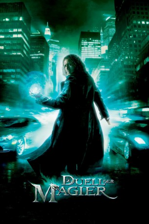

#7 Duell der Magier
Alternativ: The Sorcerer's Apprentice
 
 IMDB-Wertung: 6.1 / 10
IMDB-Wertung: 6.1 / 10  Metascore: 46
Metascore: 46 
Moderner Zauber mitten in New York: Balthazar Blake ist ein Meister seines Fachs, doch selbst er kann nicht mehr garantieren, die Stadt vor dem Bösen zu retten. Da stolpert der arglose zehnjährige Dave Stutler in seinen Kuriositätenladen. Balthazar erkennt in dem Jungen das Potential, ein ganz großer Magier zu werden. Doch der erweist sich erst einmal als Chaot und setzt versehentlich Balthazars Erzfeind Horvath aus seinem langjährigen Gefängnis frei. Die Wege von Balthazar und Dave kreuzen sich zehn Jahre später wieder. Dann beginnt Dave, zu einem ungelenken Physikstudent herangewachsen, seine Ausbildung als Zaubergeselle, die er bald dringend nötig hat.
Jahr: 2010
Dauer: 109 Minuten
FSK: 12
Land: USA Studio: Walt Disney Studios Motion PicturesTonspuren: DTS - ,
Untertitel:
Auflösung: 720p (1280×528) Größe: 4034 MB
Genre: Action, Abenteuer, Familie, Fantasy
Regisseur:  Jon Turteltaub
Jon Turteltaub
Drehbuch: Lawrence Konner, Mark Rosenthal, Matt Lopez, Matt Lopez, Doug Miro
Soundtrack: Trevor Rabin
Darsteller:
 Nicolas Cage als Balthazar
Nicolas Cage als Balthazar Jay Baruchel als Dave
Jay Baruchel als Dave Alfred Molina als Horvath
Alfred Molina als Horvath Teresa Palmer als Becky
Teresa Palmer als Becky Toby Kebbell als Drake Stone
Toby Kebbell als Drake Stone- Omar Benson Miller als Bennet
 Monica Bellucci als Veronica
Monica Bellucci als Veronica Alice Krige als Morgana
Alice Krige als Morgana Jake Cherry als Young Dave
Jake Cherry als Young Dave- James A. Stephens als Merlin
- Gregory Woo als Sun-Lok
 Wai Ching Ho als Chinese Woman
Wai Ching Ho als Chinese Woman- Jason R. Moore als Subway Mugger
 Robert Capron als Young Dave's Pal
Robert Capron als Young Dave's Pal Peyton List als Young Becky
Peyton List als Young Becky- Marika Daciuk als Russian Woman
- Nicole Ehinger als Abigail Williams
 Adriane Lenox als Ms. Algar
Adriane Lenox als Ms. Algar- Ethan Peck als Andre
- Manish Dayal als NYU Clerk
 Joe Lisi als Police Captain
Joe Lisi als Police Captain Victor Cruz als Auto Impound Clerk
Victor Cruz als Auto Impound Clerk- Parisa Fitz-Henley als Bennet's Girlfriend
- Brandon Gill als Student in Bathroom
- Adria Baratta als Student #1
- Rosie Moss als Student #2
- Ian Alda als Physics Student
 John Farrer als Hotel Doorman , uncredited
John Farrer als Hotel Doorman , uncredited- Rohit Gaur als Villager , uncredited
- Johnathan Hallgrey als Lawyer , uncredited
 Jian Leonardo als Sun Roc , uncredited
Jian Leonardo als Sun Roc , uncredited Ian McShane als Narrator , uncredited
Ian McShane als Narrator , uncredited- Ryan O'Callaghan als Rain Kid , uncredited
 Lorna Pruce als Metermaid , uncredited
Lorna Pruce als Metermaid , uncredited- Sean Patrick Reilly als Times , uncredited
- Aija Terauda als Shopper , uncredited
- Sándor Técsy als Russian Man
- Oscar A. Colon als Fry Cook
- William Devlin als Police Officer
- Melissa Gallagher als Woman on the Street
- Henry Yuk als Chinese Dragon Carrier
- Jordan Johnston als Mean Kid
- Izuchukwu Mozie als African Boy
- Amit Soni als Indian Boy
- Maha Chehlaoui als Hot Girl
- Tarek Arafat als Fireworks Salesmen , uncredited
- Rich Campbell als Medieval Troubador , uncredited
- David MacDonald als (uncredited
- Nick Sartori als Student #3 , uncredited
- Vixit Thamboun als China Doll Mime , uncredited
Datei: X:\2010(A-F)\Duell der Magier (2010, FSK12, 1280x528).mkv seit 15.01.2015
Festplatte: HD 2009(G-Z)-2010(A-F)
 Es gibt insgesamt 95 Filme in der Gruppe '2010(A-F)'
Es gibt insgesamt 95 Filme in der Gruppe '2010(A-F)'